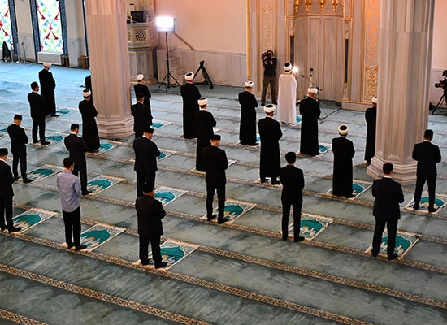

The Beacon is the first place I truly felt at home after moving to the city. The community welcomed my family with open arms from our very first visit.
Mother of three · Member since 2019

Real stories from the people who pray, learn, and belong here.
Whether they joined yesterday or three decades ago, our members all share one thing: a feeling of belonging.
The Beacon is the first place I truly felt at home after moving to the city. The community welcomed my family with open arms from our very first visit.
The Quran classes changed my relationship with my faith. Imam Dawud teaches with so much patience and warmth that everyone feels they can learn.
As a student far from my own family, the community iftars and youth nights made me feel like I had a second family here. I volunteer every chance I get.
I have prayed at many mosques over the years, but none matched the sincerity of this community. When my mother fell ill, the brothers and sisters truly rallied around us.
My children beg to come to the weekend school every Saturday. They have learned Quran, manners, and made friends from every background. We feel so blessed.
The interfaith dialogue events opened my eyes and my heart. The Beacon is a genuine bridge between communities, and I am proud to call it my mosque.